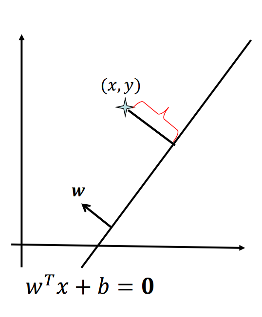
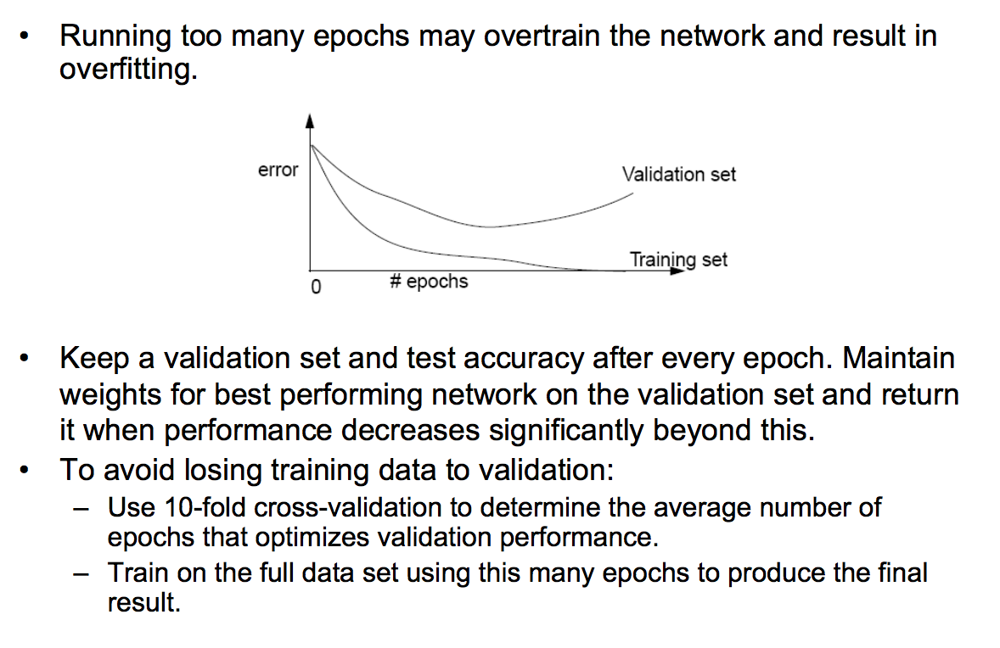

Support Vector Machine
Support Vector Machine likes Perceptron in the point, it does
not assume the data followed any distributions or relation
like Logistic Regression, Naive Bayes and LDA. So it is a very
robust method when applying for unknown distribution data.
When we talk about SVM, we talk about 2 very important
features of SVM, those are Margin and Kernel.
To begin, we talk about its margin. In
other previous machine learning models, we draw a separate
line between many classes. However, given a linearly separable
2 classes data, we can draw many separate lines that satisfy
the constraints that linearly separate 2 classes. So which
line do you choose? As natural, you will choose the one that
have the largest distance to the closest elements of 2
classes. That is the idea behind the SVM. The closest elements
are called Support Vectors, that's why SVM
got that name. The whole problem of SVM is a convex
optimization.
First, let's defined a functional margin.
Let $d: w^Tx + b = 0$ be a linear decision boundary. The
functional margin for a point $(x^i,y^i)$ is defined as:
\[y^i(w^Tx^i + b)\]
For a fixed $w$ and $b$, the larger functional value, the
more confidence we have about the prediction. Next, we want to
find $w$ and $b$ so we can relax to get a possible
goal: find a
set of $w$ and $b$ so that all training data points will
have large (maximum) functional margin. However, we
can arbitrarily change the functional margin without changing
the boundary at all. So what we need here is geometric margin
as follow:
\[\frac{y^i(w^Tx^i + b)}{||w||}\]
It measures the geometric distance between the point and the
decision boundary. It can be either positive or negative:
Positive if the point is correctly classified or Negative if
the point is misclassified.

We can represent the constrained optimization as follow:
\[\max \limits_{w,b} \gamma \]
\[s.t: \frac{y^i(w^Tx^i + b)}{||w||} \geq \gamma, i = 1,.,N
\]
We can transform this optimization to new form as follow:
\[\max \limits_{w,b} \frac{1}{2}||w||^2 \]
\[s.t: y^i(w^Tx^i + b) \geq 1, i = 1,.,N \]
From this form, we can use Quadratic Programming
(QP) with Lagrangian and solve the dual problem instead of
primal (the form above).
Let $\alpha$ be KTT multipliers, the previous constrained
problem can be expressed as:
![]()
And the
solution can be expressed as a linear combination of the
training vectors:
\[w
= \sum_{i=1}^{n}{\alpha_iy_ix_i}\]
Only
a few $\alpha_i$
will be greater than zero. The corresponding
$x_i$
are exactly the support
vectors,
which lie on the margin and satisfy
$y_i(w.x_i-b)=1$.
We
can compute $b$:
\[b
= \frac{1}{N_{SV}}{\sum_{i=1}^{N_{SV}}{w.x_i-y_i}}\]
We have the dual form:
In practice, we can just regard the QP solver as a "black-box"
without bothering how it works. For classifying a new input $z$,
we compute:
\[A = w \cdot z + b =
(\sum_{j=1}^{s}{\alpha_{t_j}y^{t_j}x^{t_j}})\cdot z + b =
\sum_{j=1}^{s}{\alpha_{t_j}y^{t_j}(x^{t_j}}\cdot z) + b\]
classify $z$ as Positive if $A > 0$ and Negative otherwise.
$w$ need not be computed/stored explicitly, we can store the
$\alpha_i$'s, and classify $z$ by using the above calculation,
which involves taking the dot product between training examples
and the new example $z$.
Up to this point, we can let SVM solve the linearly separable
data. However, how does SVM deal with noise? The real data must
contain noise so using maximum margin SVM is not robust to
noise. Thus, we come to the new type of SVM called
Soft
Margin SVM.
We allow functional margins to be less than 1 (could even be
< 0). The $\xi$ can be viewed as the "errors" of
our fat decision boundary. We have a tradeoff between making
the decision boundary fat and minimizing the error.
Parameter $c$ controls the tradeoff. Large $c$: $\xi$'s
incur a large penalty, so the optimal solution will try to
avoid them, that means margin will be smaller than 1. Else,
small $c$: small cost for $\xi$'s, we can sacrifice some
training examples to have a large classifier margin. $c$
puts a box-constraints on $\alpha$, weights of support
vectors. It limits the influence of individual support
vectors (maybe outliers). $c$ is hyper-parameter to be set,
so we can use cross-validation to do so.
And the next important features of SVM as I said above is
Kernel
Function. It helps SVM to deal with non-linearly
separable data. I said this problem before in linear
regression. With Linear Regression, we use high order
polynomial to divide non-linearly separable data. However,
with SVM, we use a different approach that call kernel
trick. We map the input to higher dimensional space can
solve the linearly inseparable cases.
A function $k(x_i,x_j)$ is called a kernel function if
$k(x_i,x_j)=<\phi(x_i),\phi(x_j)>$ for some
$\phi$. For example, $K(a,b) = (a\cdot b + 1)^2$. This
is equivalent to map to the quadratic space! In
practice, we specify the kernel function without
explicitly stating the transformation $\phi$. Given a
kernel function, finding its corresponding
transformation can be very cumbersome. A kernel function
can be viewed as computing some similarity measure
between objects. We can apply this kernel trick in SVM
as follow:
We have more common kernel functions:

Here are some notes with kernel function:
- In practice, we often try different kernel
functions and use cross-validation to choose
- Linear kernel, polynomial kernels (with low
degrees) and RBF kernels are popular choices
- One can also construct a kernel using linear
combinations of different kernels and learn the
combination parameters (kernel learning)
- Selecting the kernel parameter and $c$ is very
strong impact on performance and often the optimal
range is reasonably large
When comparing to Logistic Regression (another
Discriminative Model), we have the following notices:
- If $n$ (# features) is large and $m$ (# of
training example) is small: we should use Logistic
regression or SVM with linear kernel.
- If $n$ is small and $m$ is intermediate, we should
use RBF.
- If $n$ is small and $m$ is large, SVM will be slow
to run with RBF kernel. We could manually create or
add more features and apply SVM with RBF kernel or
use logistic regression of SVM with linear kernel.
- Logistic regression and SVM with a linear kernel
are pretty similar. They do similar thing and get
similar performance.
That completes all basic information about SVM. Next
we move on another Discriminative model called
Decision Tree.
Decision Trees
Decision trees have many appealing properties. They
are similar to the human decision process, and easy to
understand. They deal with both discrete and
continuous features. With highly flexible hypothesis
space, as the # of nodes (or depth) of the tree
increase, decision tree can represent increasingly
complex decision boundaries as the following figure.
Like SVM, we have to set up a possible goal
for Decision tree is: finding a decision tree $h$
that achieves minimum error on training data. With
that possible goal, we have the greedy algorithm for
finding $h$. Instead of trying to optimize the whole
tree together, we try to find one test at a time. We
assume all features are discrete values. Remember that
this algorithm is not guaranteed to find an optimal
decision tree.
The problem here is how to choose the best test to
choose the best attribute. There are many different
tests, at here, we choose
mutual information
(or
information gain criterion) test
to present because it is quite easy to understand and
have good performance in general. The first time to
know is
Entropy. In information
theory, entropy is the measure of uncertainty of a
random variable. Given a set of training examples $S$
and $y$ denote the label of an example randomly draw
from $S$. If all examples belong to one class, $y$ has
$0$ entropy. If $y$ takes positive and negative values
with a 50% - 50% chance, we have the highest amount of
uncertainty in $y$ or $entropy = 1$. Entropy can
be calculated by this formula:
\[H(x) = \sum_{i=1}^{k}{p_i\log_2{\frac{1}{p_i}}} =
-\sum_{i = 1}^{k}{p_i\log_2{p_i}}\]
With the above
example, we will choose to split the data with the
feature "Outlook", which has higher information
gain value. However, with this test, there is a
problem that multi-nomial features (which has more
than 2 possible values) will have higher
information gain in general. This is called the
bias, to avoid this, we can rescale the
information gain as follow:
\[\arg \max \limits_j \frac{H(y) -
H(y|x_j)}{H(x_j)}\].
Next, how we deal with continuous features. We
test against a threshold $\theta_j$ for $x_j$.
First we sort the examples according to $x_j$.
Move the threshold $\theta$ from the smallest to
the largest value. Select $\theta$ that gives the
best information gain. Note that, we only need to
compute information gain when class label changes.
Decision tree has a very flexible hypothesis
space. As the nodes increase, we can represent
arbitrarily complex decision boundaries. This can
lead to over-fitting (due to noise and outliers).
To avoid Over-fitting, we can early stop, which
means to stop growing the tree when data split
does not offer large benefit. Or we can use post
pruning. One thing to note here is Decision tree
has a well-known implementation called
C4.5
by Ross Quinlan.
We complete all basic information about decision
tree here. Next, we talk about the very famous
model, and gain the current attention from many ML
researchers around the world.
Neural Network
Neural Network is also known as Artificial
Neural Network or ANN, it stimulates
the activity of a neuron in biological neural
networks. To study about ANN, we first talk
about its smallest component called Neuron.
It receives $n$
inputs (plus a bias term), then multiplies
each input by its weight. Next it applies
activation
function to the sum of results and
finally outputs result. Activation function
controls whether a neuron is "active" or
"inactive". There are several common
activation functions. For example,
Threshold
function (outputs 1 when input is
positive and 0 otherwise, similar to
perceptron). Another activation function is
sigmoid
function that we use in Logistic
Regression, this function has a good property
for optimization is that it is differentiable.
\[\frac{1}{1+e^{-x}}\]
Next, we move on to basic multilayer Neural
Network
In
Input
layer, the number of neurons comprising
that layer is equal to the number of features
(columns) in your data. Some NN configurations add
one additional node for a bias term. Each
Hidden
layer receives its inputs from the
previous layer and forwards its outputs to the
next - feed forward structure.
Output
layer: sigmoid activation function for
classification, and linear
activation function for
regression.
NN has a very powerful representational ability.
With the combination of different weights of each
input and sigmoid function, it can represent any
Boolean Formula and arbitrary function.
Before going to
deeper the action of NN, I will discuss some
terms used in NN:
NN will find the best $w_{i,j}$ for the
whole network, we also use Gradient Descent
as in Linear Regression. We have to minimize
the mean squared error (MSE) on the training
set.
\[J(W) =
\frac{1}{2}\sum_{i=1}^{N}{(\hat{y}^i -
y^i)^2}\]
\[J_i(W) = \frac{1}{2}(\hat{y}^i - y^i)^2\]
A useful fact: the derivative of the sigmoid
activation function is
\[\frac{d\sigma(x)}{dx}=
\sigma(x)(1-\sigma(x))\]
After calculating all $a_i$ from input layer
to output layer to get the final $\hat{y}$.
We next calculate the special term call
''error" $\delta$ from output layer and push
back to input layer. this process called
Back
Propagation. We calculate the
"error" as follow. If current node is in
output layer, for example node 9 in the
above figure: $\delta^i_9 = (\hat{y}^i -
y^i)\hat{y}^i(1-\hat{y}^i)$. If current node
is in hidden layer, for example node 6 in
the above figure, $\delta^i_6 = \delta^i_9
\cdot w_{9,6} \cdot a^i_6 (1-a^i_6)$. Or we
can have general form: \[\delta =
\text{activation functon}\cdot \text{sum of
signal with weights}\]
We have
the following back propagation training:
Put it altogether, we have the following
back propagation:
For Batch Gradient Descent, we get the
$\sum_{i=1}^{N}\partial_WJ_i(W)$ for
each example $i$. Then take a gradient
descent step. With online or stochastic
Gradient Descent, we take a gradient
descent step with $\partial_WJ_i(W)$ as
it is computed in above algorithm. Some
important notice on training:
- No guarantee of convergence, may
oscillate or reach local minima.
- In practice, many large networks
can be adequately trained on large
amounts of data for realistic
problems
- Many epochs (thousands) may be
needed for adequate training, large
data sets may require hours or days
of CPU time.
- Termination criteria can be:
Fixed number of epochs, Threshold on
training set error, or Increased
error on a validation set.
Notes on Proper Initialization:
Next, we talk about some problems
with NN. Over-training prevention and
over-fitting prevention

With a basic neural network, we can
build up another powerful network called
deep learning that gain the recent
attention of ML researchers. I will not
discuss deep learning in these series. I
will try my best to cover this knowledge
later. Up to this point, we complete the
section 2 of series "Introduction to
Machine Learning." Hope you enjoy
reading my blogs.